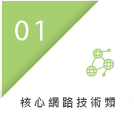
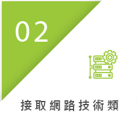
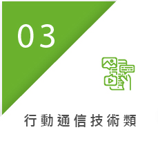
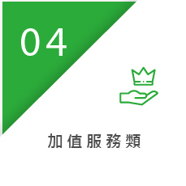
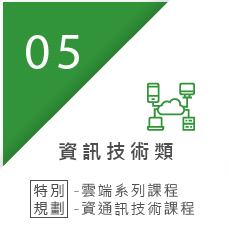
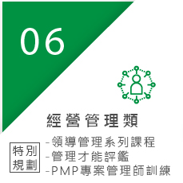
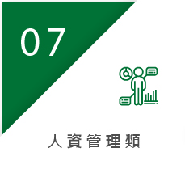
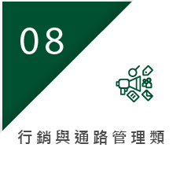

訓練課程
中華電信的訓練已建妥一套機制，每年都有訓練需求分析與規劃的事前作業，並編訂年度計劃，依計劃開班調訓，事後亦有訓練績效評估與檢討，使員工在公司的引導下，有制度的學習成長，獲得各項知識與技能。
進入中華電信之員工，均先接受新進人員訓練，之後再依工作要求選擇各種領域之訓練課程，八大領域如下：








此外，為強化訓練，除一般課程外並有認證課程，認證分為內部認證與外部認證兩種，內部認證係由電信學院開發的認證；外部認證係指由電信學院輔導同仁取得公司外部認證機構發給的證照。